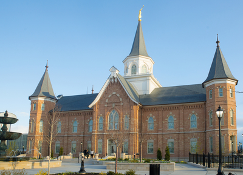

Provo City Center Temple
The Provo City Center Temple was dedicated by Elder Dallin H. Oaks on March 20, 2016, becoming the 16th Utah temple, and the 150th temple of The Church of Jesus Christ of Latter-day Saints in the world.